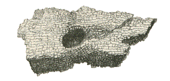

"Carn Cavall, or, as it is generally pronounced, Corn Cavall, is a lofty and rugged mountain, in the upper part of the district anciently called Buellt, now written Builth, in Breconshire. Scattered over this mountain are several carns of various dimensions, some of which are of very considerable magnitude, being at least a hundred and fifty feet in circumference. On one of these carns may still be seen a stone, so nearly corresponding with the description in Nennius, as to furnish strong presumption that it is the identical object referred to.  It is near two feet in length, and not quite a foot wide, and such as a man might without any great exertion, carry away in his hands. On the one side is an oval indentation, rounded at the bottom, nearly four inches long by three wide, about two inches deep, and altogether presenting such an appearance as might, without any great strain of imagination, be thought to resemble the print of a dog's foot; on a more minute inspection it will be found that although there is towards the middle part a slight mark corresponding with the ball of the foot, yet the divisions of the toes and marks of the nails are wanting; but when we make allowance for the effect of a thousand winters in this high and stormy region, it is not too much to suppose that at one time the resemblance was still more striking. As the stone is a species of conglomerate, it is possible that some unimaginative geologist may persist in maintaining that this footprint is nothing more than the cavity, left by the removal of a rounded pebble, which was once imbedded in the stone; such all opinion scarcely requires a remark. The following sketch will give an idea of the stone."*